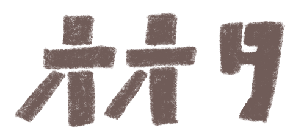
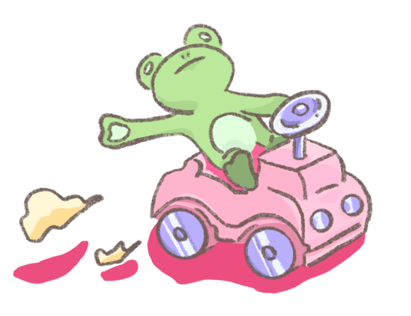
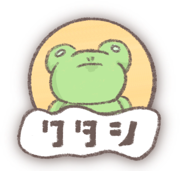
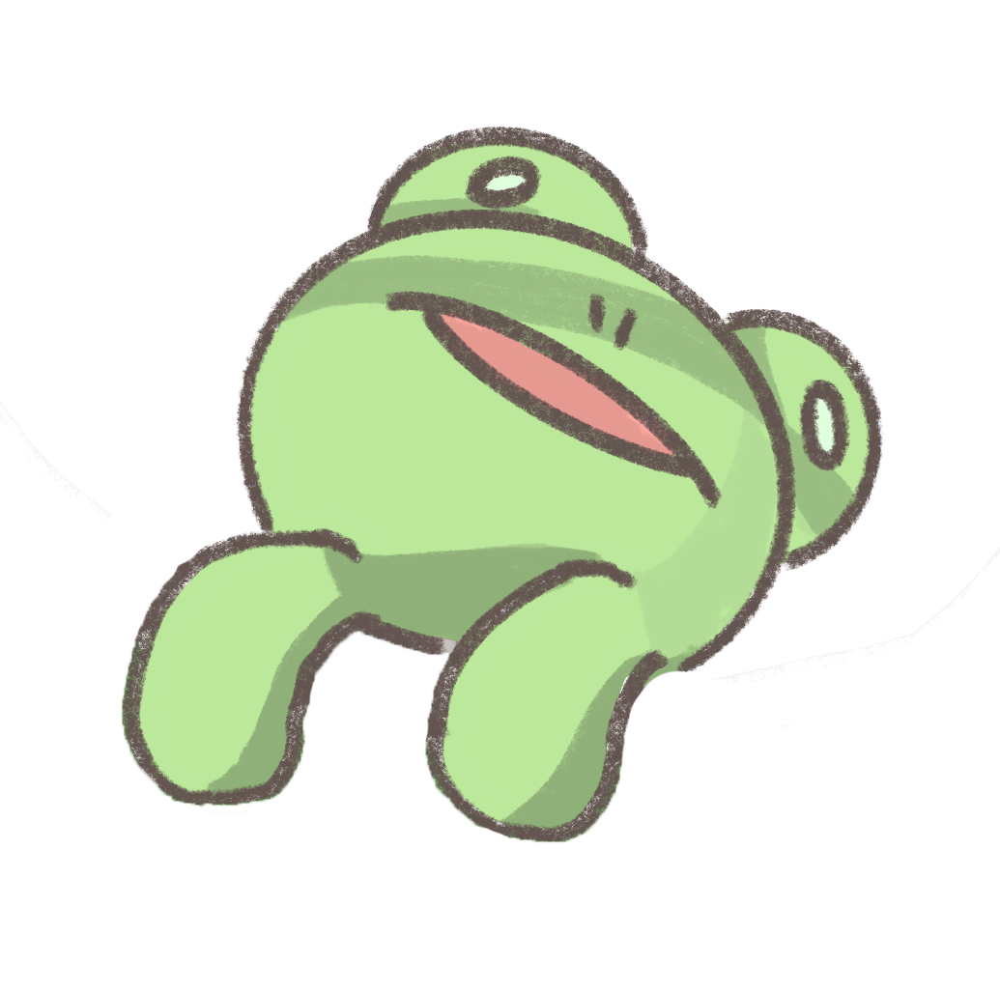

はじめまして、太田 華（オオタ ハナ）です。東京造形大学メディアデザイン専攻の3年生です。「見やすさ、使いやすさ、使いたくなる楽しさ」を大切に、Web・アプリのUI/UXやイラストを制作しています。
もっと
.png)
えほん
PROFiLE
ワタシについて
おおた はな
太田 華 Ota Hana
東京造形大学 造形学部 デザイン学科
メディアデザイン専攻領域 3年（2028年3月卒業見込み）
ものづくりの軸
「見やすさ、使いやすさ、使いたくなる楽しさ」で、人の感情を動かしたい。
「自分以外のだれかのことを想ってつくること」を原点に、使う人の視点に寄り添うUI/UXデザインに取り組んでいます。課題を解決するだけでなく、触った瞬間の「わくわく感」とほっとする「安心感」が両立する、優しい体験を届けることを目指しています。
受賞歴
2025.03 受賞
第21回 ACジャパン広告学生賞 テレビCM部門 奨励賞
作品名：『ベットはどんなとこ？』
2024.01 受賞
第32回 神奈川県工業高等学校生徒研究発表会 青少年センター館長賞
2023.11 受賞
ひたちなかプロジェクションマッピング in ひたちなか開運鐵道神社 最優秀賞
ワタシの3つの強み
- 1. 相手視点に立った設計・構成力高校・大学での数々の受賞経験を通じ、目的やターゲットを深く捉え、直感的に「伝わる・迷わない」構造をつくる力を培いました。
- 2. 親しみやすいビジュアル×モーション表現手描きの温かみを活かしたイラストや、After Effects等を用いた心地よいアニメーションで、UIに楽しさや安心感をプラスできます。
- 3. デザインから実装までの一貫対応FigmaでのUI設計に加え、HTML / CSS / JavaScript を用いて実際に動くWebサイト（本ポートフォリオなど）として形にできます。
スキルセット
Illustrator
4年以上の経験
ロゴ・アイコン・UIパーツ・ベクターイラスト
Photoshop
4年以上の経験
画像合成・レタッチ・ビジュアル制作
HTML / CSS
3年の経験
レスポンシブ設計・Webサイト構築
After Effects
3年の経験
UIモーション・映像演出・アニメーション
Premiere
3年の経験
映像編集・プロモーション動画制作
JavaScript
2年の経験
画面遷移・インタラクション実装
Lightroom Classic
2年の経験
写真の色調補正・トーン統一
Figma / Blender / Unity
制作・学習中
UIプロトタイプ・3D表現・インタラクティブ制作
学歴・資格
- 2021.04神奈川県立神奈川工業高等学校 デザイン科 入学
- 2022.07実用英語技能検定 2級 取得
- 2024.03神奈川県立神奈川工業高等学校 デザイン科 卒業
- 2024.04東京造形大学 造形学部 デザイン学科 メディアデザイン専攻領域 入学
- 2028.03東京造形大学 卒業見込み
すきなこと
小中学生時代にスポーツをしていたため、身体を動かすことが好きです。一方で、ゆっくり自分の時間を過ごすのも大切にしています。
WORKS BOOK
せいさくぶつのえほん
ページをめくるように、これまでの制作物を一覧でご覧いただけます。気になる作品のページをタップすると詳細が開きます。